K562 Neither DNase unmatched - State 4:PromP (n=58)
K562 Neither DNase unmatched - State 4:PromP (n=58)
[
See group descriptions
]
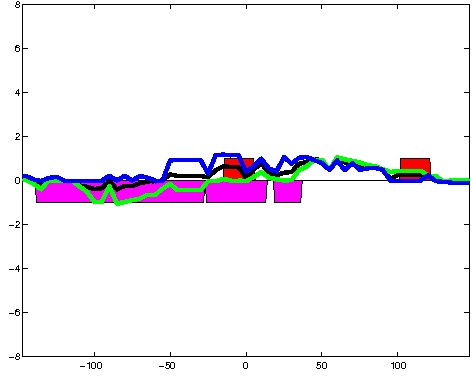
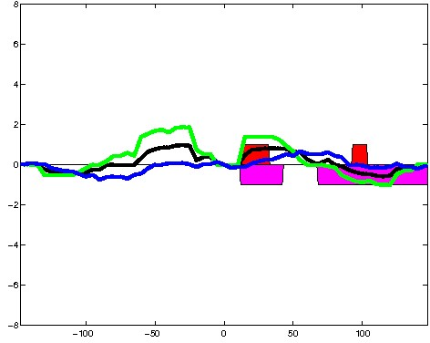
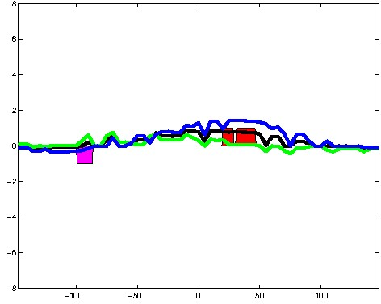
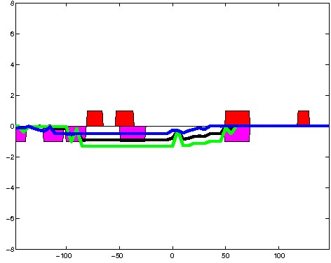
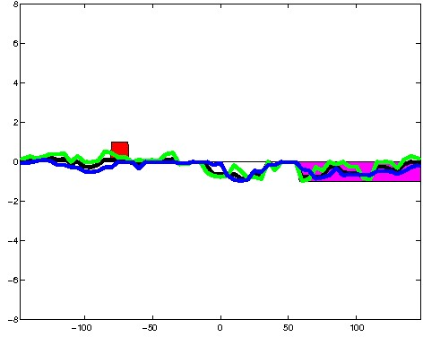
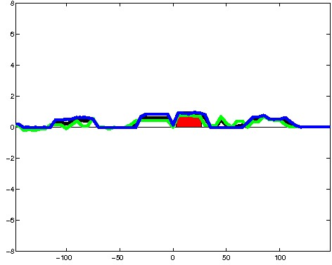
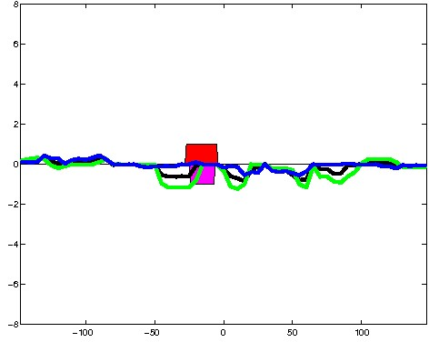
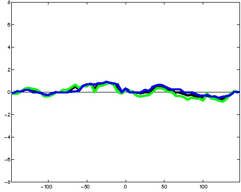
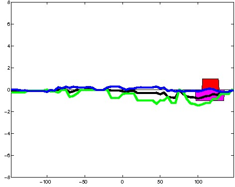
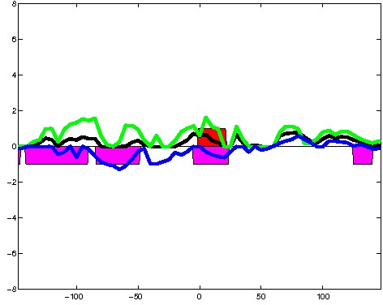
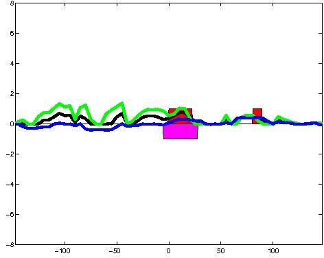
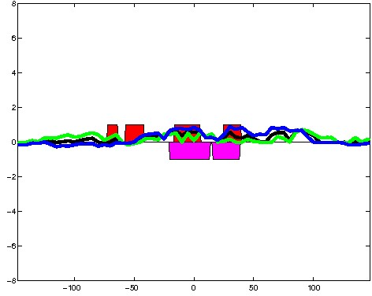
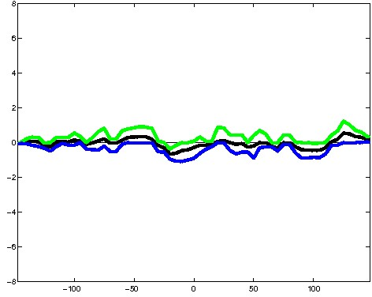
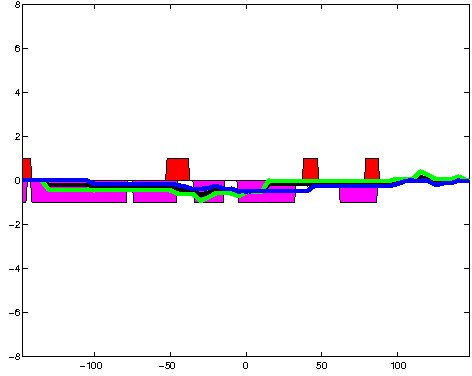
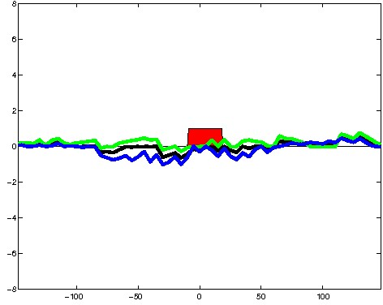
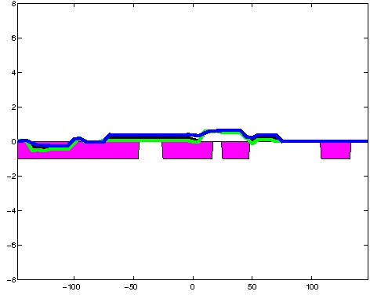
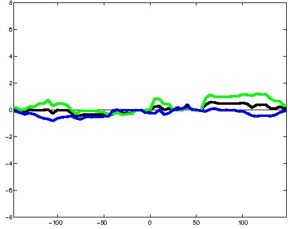
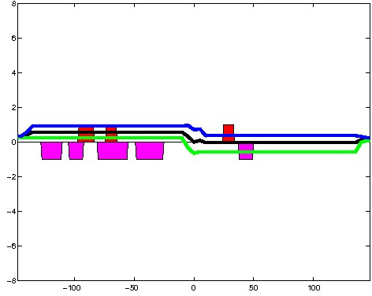
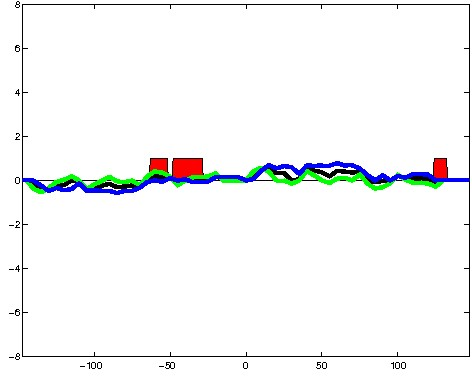
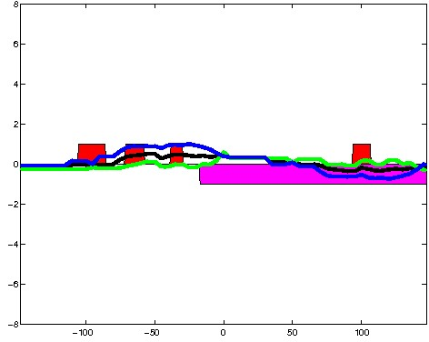
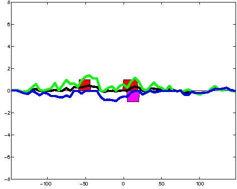
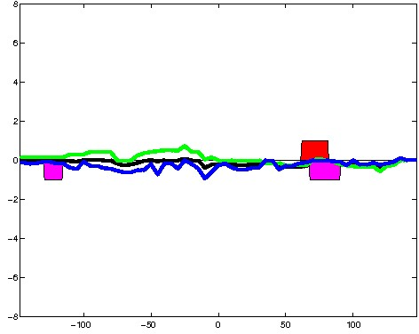
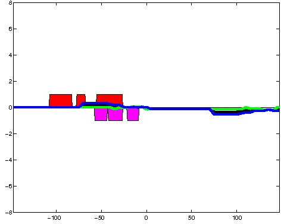
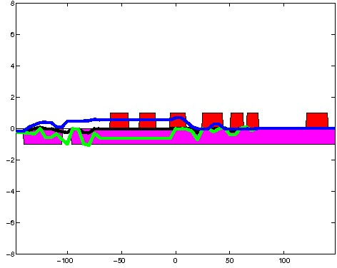
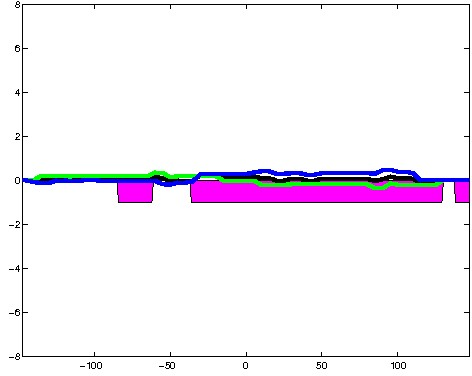
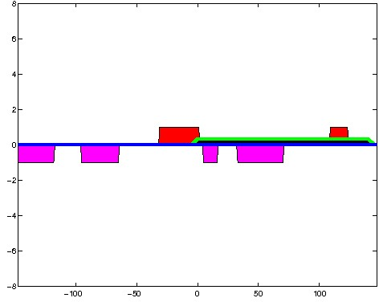
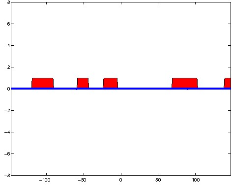
; picked in Huvec (state 4:PromP, DNase); unmatched; chr15:98,971,609-98,971,903 (295bp)")
; picked in HepG2 (state 4:PromP, DNase); unmatched; chr2:132,431,569-132,431,863 (295bp)") 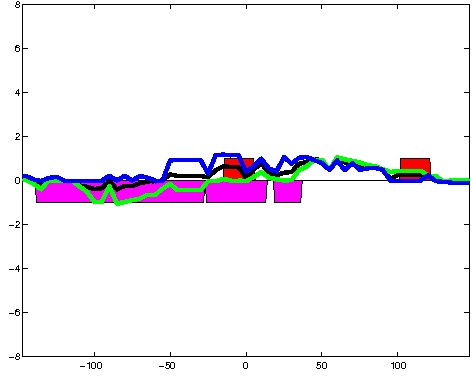
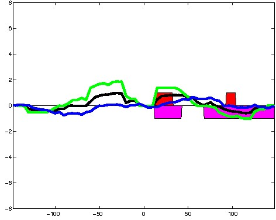
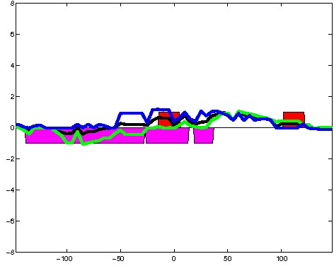
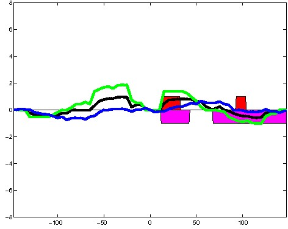
; picked in Huvec (state 5:Enh, DNase); unmatched; chr3:194,827,129-194,827,423 (295bp)")
; picked in Huvec (state 4:PromP, DNase); unmatched; chr17:38,518,909-38,519,203 (295bp)")
; picked in H1hesc (state 4:PromP, DNase); unmatched; chr4:57,410,749-57,411,043 (295bp)")
; picked in HepG2 (state 12:CtcfO, DNase); unmatched; chr9:95,766,049-95,766,343 (295bp)") 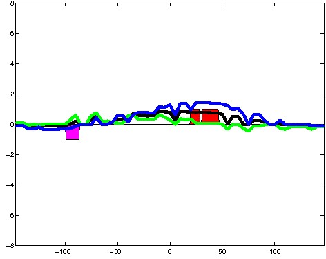
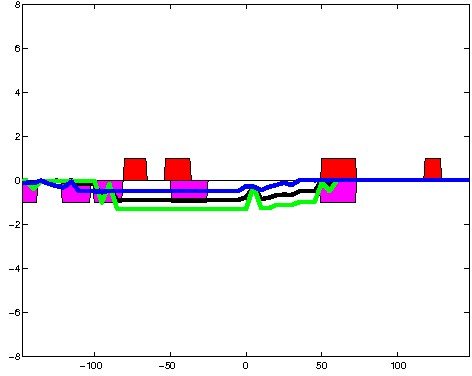
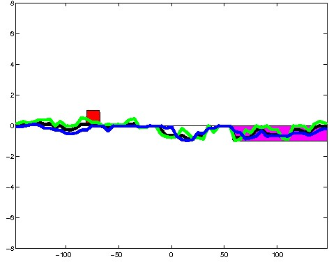
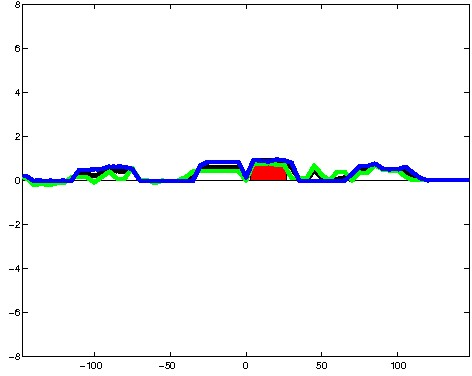
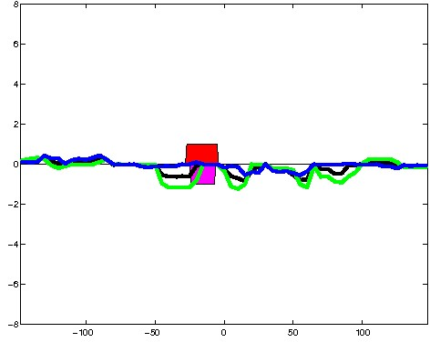
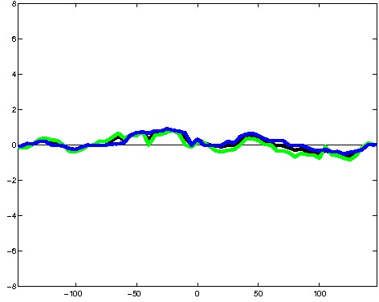
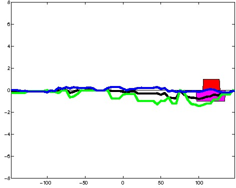
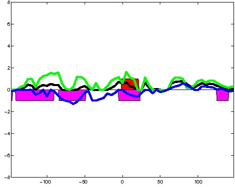
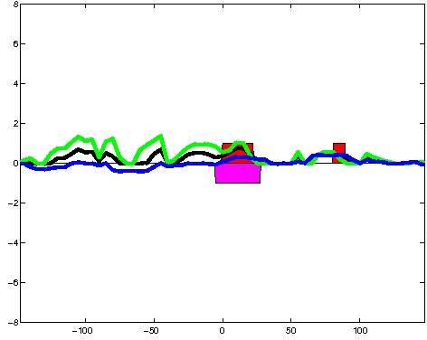
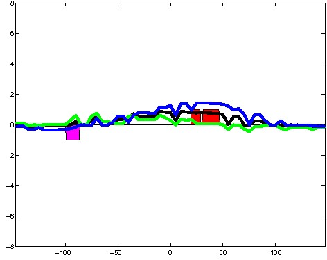
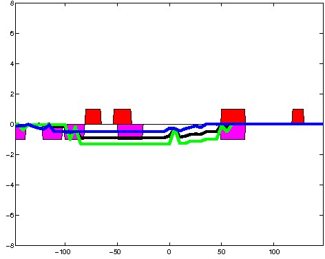
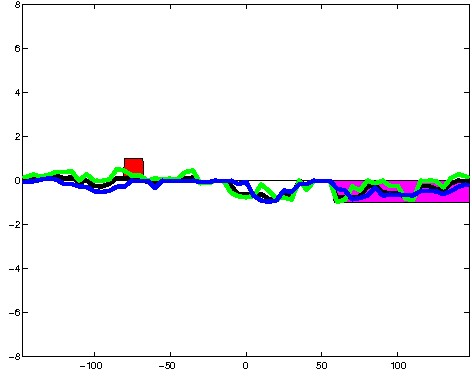
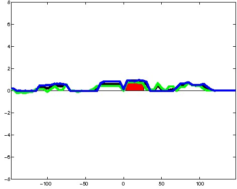
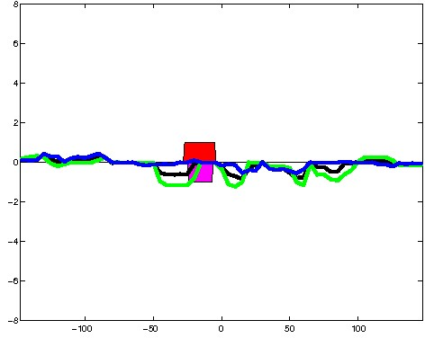
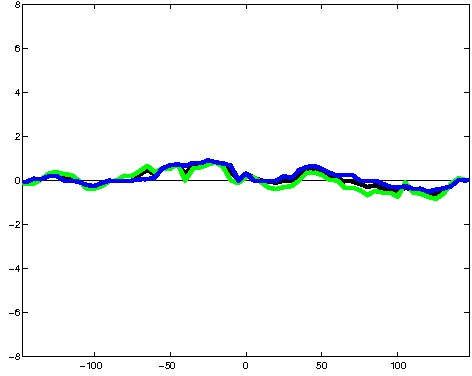
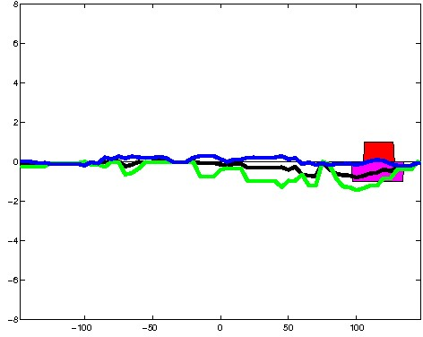
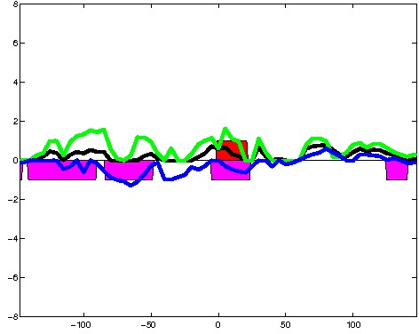
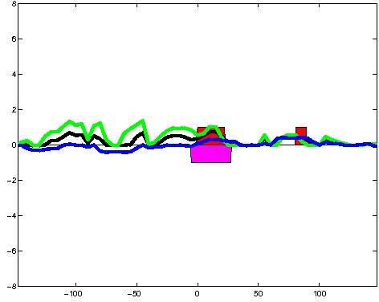
; picked in HepG2 (state 12:CtcfO, DNase); unmatched; chr1:230,933,689-230,933,983 (295bp)")
; picked in HepG2 (state 12:CtcfO, DNase); unmatched; chr17:61,045,829-61,046,123 (295bp)") 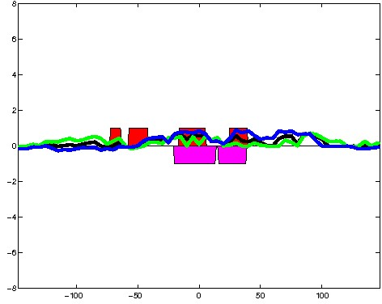

; picked in Huvec (state 5:Enh, DNase); unmatched; chr1:6,803,929-6,804,223 (295bp)") 


; picked in Huvec (state 4:PromP, DNase); unmatched; chr4:57,410,729-57,411,023 (295bp)")
; picked in HepG2 (state 4:PromP, DNase); unmatched; chr4:57,410,749-57,411,043 (295bp)") 


; picked in Huvec (state 4:PromP, DNase); unmatched; chr7:151,479,989-151,480,283 (295bp)")
; picked in HepG2 (state 4:PromP, DNase); unmatched; chr12:107,297,389-107,297,683 (295bp)")
; picked in HepG2 (state 4:PromP, DNase); unmatched; chr7:151,329,389-151,329,683 (295bp)") 

; picked in Huvec (state 4:PromP, DNase); unmatched; chr5:54,529,369-54,529,663 (295bp)") 

; picked in HepG2 (state 3:PromF, DNase); unmatched; chr16:2,070,529-2,070,823 (295bp)")
; picked in HepG2 (state 4:PromP, DNase); unmatched; chr1:23,504,109-23,504,403 (295bp)")
; picked in Huvec (state 4:PromP, DNase); unmatched; chr13:92,050,689-92,050,983 (295bp)")
; picked in H1hesc (state 4:PromP, DNase); unmatched; chr11:18,743,569-18,743,863 (295bp)") 

; picked in H1hesc (state 5:Enh, DNase); unmatched; chr5:157,375,829-157,376,123 (295bp)")
; picked in HepG2 (state 12:CtcfO, DNase); unmatched; chr12:110,950,229-110,950,523 (295bp)") 

; picked in H1hesc (state 5:Enh, DNase); unmatched; chr11:105,831,189-105,831,483 (295bp)")
; picked in Huvec (state 1:Tss, DNase); unmatched; chr10:45,360,309-45,360,603 (295bp)")
; picked in Huvec (state 4:PromP, DNase); unmatched; chr10:119,989-120,283 (295bp)") 


; picked in HepG2 (state 4:PromP, DNase); unmatched; chr11:71,350,269-71,350,563 (295bp)")
; picked in HepG2 (state 4:PromP, DNase); unmatched; chr12:132,312,789-132,313,083 (295bp)") 


; picked in Huvec (state 4:PromP, DNase); unmatched; chr14:90,526,749-90,527,043 (295bp)")
; picked in HepG2 (state 1:Tss, DNase); unmatched; chr11:109,963,689-109,963,983 (295bp)") 

; picked in H1hesc (state 4:PromP, DNase); unmatched; chr7:150,945,849-150,946,143 (295bp)")
; picked in HepG2 (state 4:PromP, DNase); unmatched; chr14:51,297,809-51,298,103 (295bp)") 

; picked in HepG2 (state 1:Tss, DNase); unmatched; chr1:178,694,169-178,694,463 (295bp)")